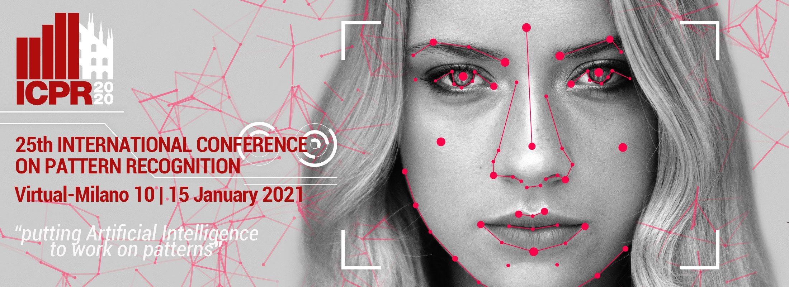
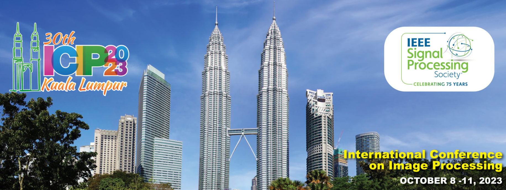
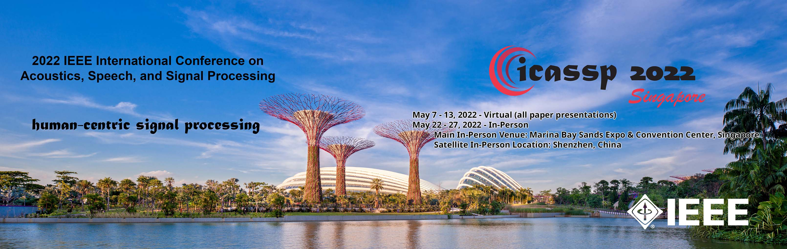
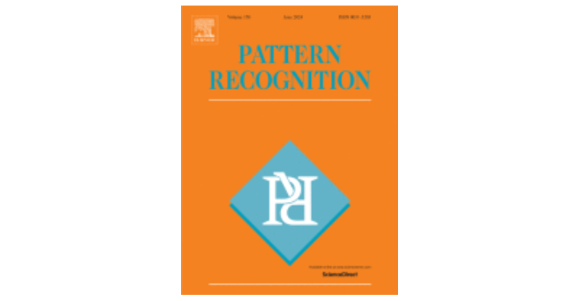
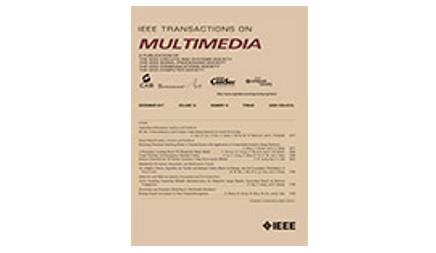
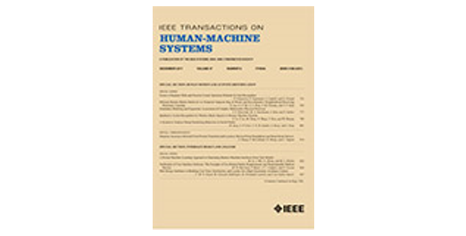
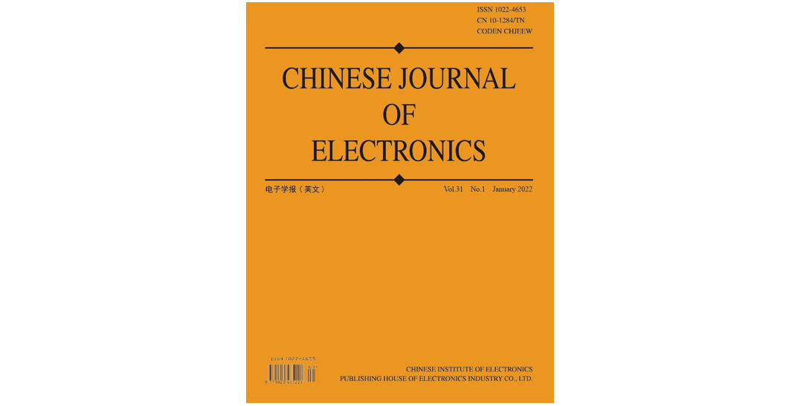
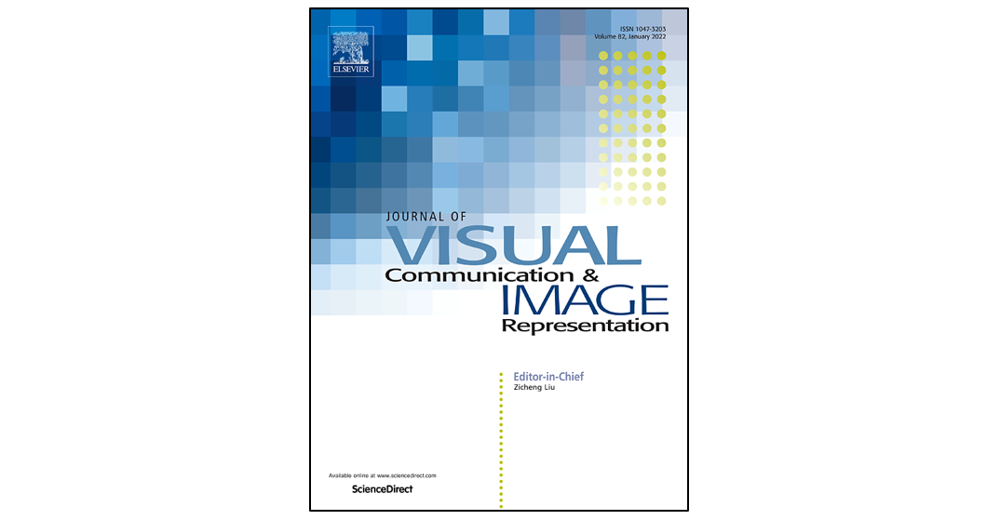
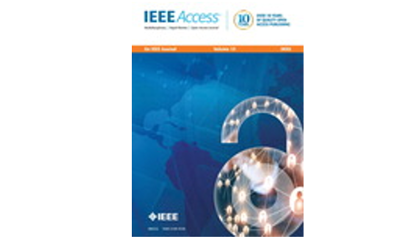

Keep Curiosity
郭天宇
133 5907 8789
levigty@stu.pku.edu.cn
关于我
- 蚂蚁集团 | 算法
- 北京大学深圳研究生院 | 硕士
研究方向
会议论文
- Tianyu Guo, Hong Liu, Zhan Chen, Mengyuan Liu, Tao Wang, Runwei Ding. Contrastive Learning from Extremely Augmented Skeleton Sequences for Self-Supervised Action Recognition. In Proceedings of AAAI Conference on Artificial Intelligence (AAAI), 2022. (CCF-A, Oral)
- Jingwen Guo, Hong Liu, Shitong Sun, Tianyu Guo, Min Zhang, Chenyang Si. FSAR: Federated Skeleton-based Action Recognition with Adaptive Topology Structure and Knowledge Distillation. In Proceedings of the IEEE/CVF International Conference on Computer Vision (ICCV), 2023.
- Tao Wang, Hong Liu, Pinhao Song, Tianyu Guo, Wei Shi. Pose-Guided Feature Disentangling for Occluded Person Re-Identification Based on Transformer. In Proceedings of AAAI Conference on Artificial Intelligence (AAAI), 2022. (CCF-A)

- Tianyu Guo, Linlin Zhang, Runwei Ding, Ge Yang. EDD-Net: An Efficient Defect Detection Network. In Proceedings of International Conference on Pattern Recognition (ICPR), 2020. (CCF-C)

- Guoquan Wang, Hong Liu, Tianyu Guo, Jingwen Guo, Ti Wang, Yidi Li. Self-Supervised 3D Skeleton Representation Learning with Active Sampling and Adaptive Relabeling for Action Recognition. In Proceedings of IEEE International Conference on Image Processing (ICIP), 2023. (CCF-C)

- Jian Zhang, Runwei Ding, Miaoju Ban, Tianyu Guo. FDSNET: An Accurate Real-Time Surface Defect Segmentation Network. In Proceedings of International Conference on Acoustics, Speech, and Signal Processing (ICASSP), 2022. (CCF-B)
- Miaoju Ban, Runwei Ding, Jian Zhang, Tianyu Guo, Tao Wang. PDD-Net: A Precise Defect Detection Network Based on Point Set Representation. In Proceedings of International Conference on Acoustics, Speech, and Signal Processing (ICASSP), 2022. (CCF-B)
期刊论文

- Tianyu Guo, Mengyuan Liu, Hong Liu, Guoquan Wang, Wenhao Li. Improving Self-Supervised Action Recognition from Extremely Augmented Skeleton Sequences. In Pattern Recognition, 2024.
- Wenhao Li, Mengyuan Liu, Hong Liu, Tianyu Guo, Ti Wang, Hao Tang, Nicu Sebe. GraphMLP: A Graph MLP-like Architecture for 3D Human Pose Estimation. In Pattern Recognition, 2024.

- Tao Wang, Mengyuan Liu, Hong Liu, Wenhao Li, Miaoju Ban, Tianyu Guo, Yidi Li. Feature Completion Transformer for Occluded Person Re-identification. In IEEE Transactions on Multimedia (TMM), 2024.

- Mengyuan Liu, Hong Liu, Tianyu Guo. Cross-Model Cross-Stream Learning for Self-Supervised Human Action Recognition. In IEEE Transactions on Human-Machine Systems (THMS), 2024.

- Yanshan Li, Tianyu Guo, Xing Liu, Wenhan Luo, Weixin Xie. Action Status Based Novel Relative Feature Representations for Interaction Recognition. In Chinese Journal of Electronics (CJE), 2021.

- Xing Liu, Yanshan Li, Tianyu Guo, and Rongjie Xia. Relative View Based Holistic-Separate Representations for Two-Person Interaction Recognition Using Multiple Graph Convolutional Networks. In Journal of Visual Communication and Image Representation (JVCIR), 2020.

- Yanshan Li, Tianyu Guo. Road Traffic Anomaly Detection Based on Fuzzy Theory. In IEEE Acces, 2018.
获奖情况